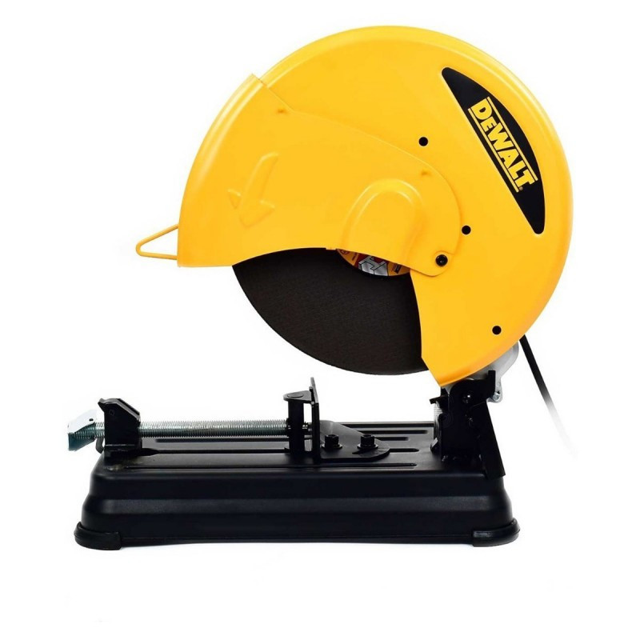

Tronzadora de Metal/Sierra de 14"
- Mango en "D" con diseño ergonómico ofrece una posición más cómoda para el operario, disminuyendo el cansancio y aumentando la productividad.
- Poderoso Motor de 2300 W brinda protección contra sobrecarga, aumentando el rendimiento y la durabilidad.
- Prensa de ajuste rápido permite sujetar materiales de distintos tamaños y formas para aumentar la productividad.
